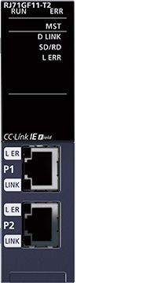
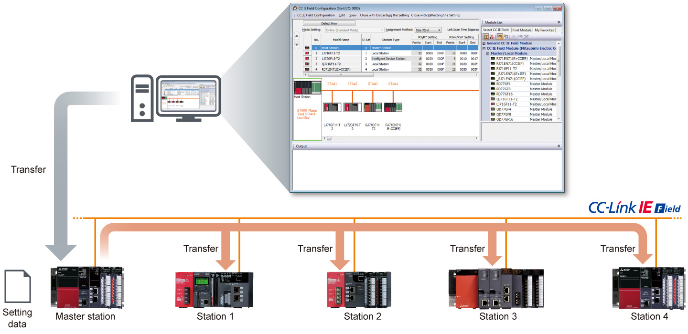
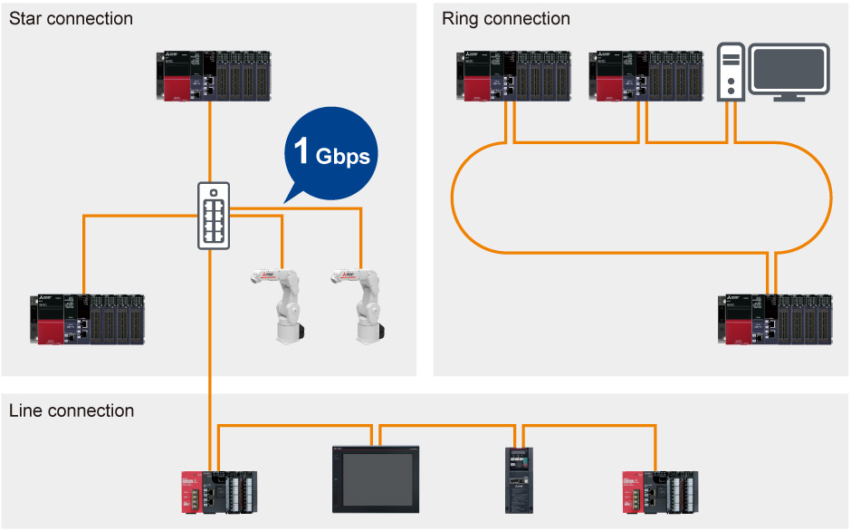
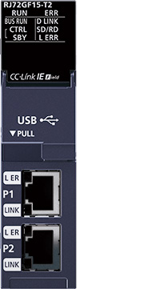
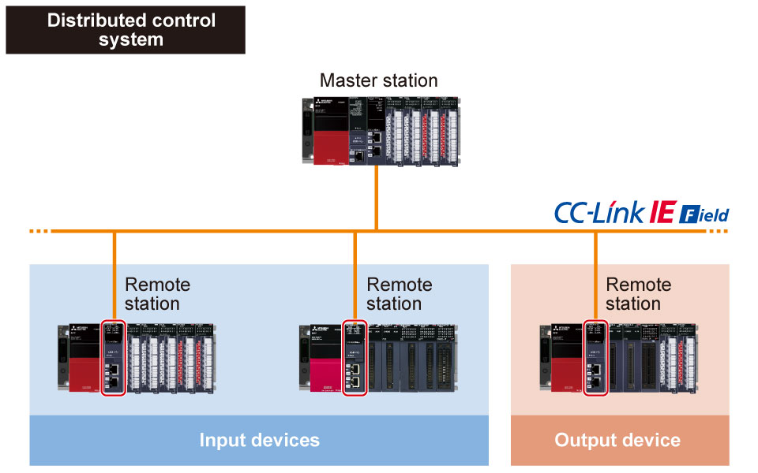

Controllers MELSEC iQ-R Series Fitur Produk -Jaringan-

Modul induk/lokal CC-Link IE Field Network
Topologi kabel yang fleksibel sesuai dengan tata letak jalur produksi, peralatan, dan perangkat didukung.
Selain itu, pengaturan dan pemecahan masalah mudah dilakukan.

Pengaturan dan pemecahan masalah yang mudah
- Pengaturan yang mudah
- Pemecahan masalah yang mudah
- Hanya dengan mengatur titik perangkat penghubung dan penugasan ke stasiun induk, pengaturan dapat secara otomatis ditransfer ke setiap stasiun lokal, sehingga memungkinkan pengaturan jaringan yang mudah
- Pemecahan masalah yang mudah tanpa bergantung pada pengalaman dan pengetahuan dapat dilakukan pada perangkat lunak rekayasa GX Works3

Berbagai variasi topologi
- Jaringan fleksibel
- Topologi bintang
Perangkat dihubungkan melalui sakelar Ethernet yang memungkinkan stasiun perangkat ditambahkan dengan mudah. - Topologi garis
Koneksi perangkat yang berkelanjutan di sepanjang garis Ethernet, mengurangi biaya pemasangan kabel. - Topologi cincin
Koneksi dilakukan dalam loop berkelanjutan, yang menjamin komunikasi dengan mengisolasi stasiun jaringan yang rusak.

Spesifikasi modul master/lokal CC-Link IE Field Network
| Item | RJ71GF11-T2 |
|---|---|
| Compatible network | CC-Link IE Field |
| Communication speed (bps) | 1G |
| Maximum stations per network*1 | 121 |
| Network topology*2 | Line, star*3, ring |
| Connection cable | Ethernet cable (Category 5e or higher) |
| Max. station-to-station distance (m) | 100 |
| Overall cable distance (m) | Line: 12000 Star: depends on the system configuration*4 Ring: 12100 |
| Maximum link points per network | |
| Remote input (RX), remote output (RY) | 16384 points, 2KB |
| Remote register (RWr, RWw) | 8192 points, 16KB |
- *1.Termasuk stasiun induk.
- *2.Harap gunakan sakelar Ethernet terkelola yang mendukung CC-Link IE TSN (kelas B) yang direkomendasikan oleh CC-Link Partner Association untuk modul induk/lokal CC-Link IE TSN (RJ71GN11-T2) dan modul induk/lokal CC-Link IE TSN Plus (RJ71GN11-EIP).
- *3.Topologi garis dan topologi bintang dapat dicampur.
- *4.Sakelar Ethernet diperlukan untuk bintang koneksi. Hingga 20 sakelar Ethernet dapat dihubungkan.
Modul kepala jarak jauh CC-Link IE Field Network
Modul kepala jarak jauh yang dipasang di slot CPU dapat mengontrol modul pada unit dasar melalui jaringan.

Kontrol terdistribusi yang sangat andal dan sistem redundan
- Pengkabelan berkurang
- Sangat andal
- Sistem kontrol terdistribusi yang hemat kabel dan ruang dapat dicapai
- Memasang modul kepala redundan dan kabel jaringan redundan memastikan komunikasi berkelanjutan; bahkan jika terjadi kesalahan pada salah satu modul kepala, modul siaga jaringan dapat mengambil alih tanpa mengganggu komunikasi jaringan dan memulai sistem kontrol untuk beralih ke sistem siaga


Modul di dalam kotak merah adalah modul kepala jarak jauh CC-Link IE Field Network (RJ72GF15-T2).
Spesifikasi modul kepala jarak jauh CC-Link IE Field Network
| Item | RJ72GF15-T2 |
|---|---|
| Transmission speed (bps) | 1G |
| Network topology | Line, star (both types can be on the same line), ring |
| Connection cable | Ethernet cable (Category 5e or higher, double shielded/STP) |
| Max. station-to-station distance (m) | 100 |
| Overall cable distance (m) | Line: 12000 (when 121 stations are connected) Star: Depends on the system configuration Ring: 12100 (when 121 stations are connected) |
| SIL 2-supporting | ●*5 |
| Max. number of link points per network | |
| Remote input (RX), remote output (RY) | 2048 points, 256B |
| Remote register (RWr, RWw) | 1024 points, 2KB |
- *5.Digunakan saat sistem redundan pendukung SIL 2 dikonfigurasi.